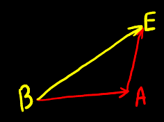
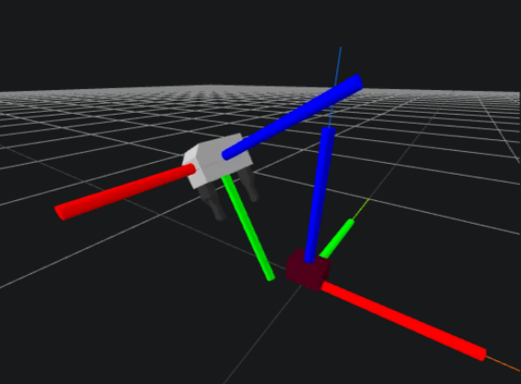

A reference frame has a point at its centre. Its orientation can be represented in many ways but it is visually represented with the xyz axes. XYZ => RGB. Use the right-hand rule (vehicle coordinate system).
The aim is to get the different frames to match; because once they do, the algebra becomes trivial. For example, once the frames match, we can add positions.

$^BP^E_C = ^BP^A_C + ^AP^E_C$
Position
The simplest concept is just a point in some three-dimensional space.
$A$ is the frame or point of interest
$P^A$ - Position of $A$
$^BP^A$ - Position of $A$ relative to $B$
$P$ is a vector going from point $B$ to $A$ - Imagine an arrow drawn from $B$ to $A$. Positions always have to be defined w.r.t. something.
$\in\mathbb{R}^3$
Our 3D vectors (3x1) contain 3 real numbers.
$^BP^A_C$ - $C$ is the expressed in frame
Distance between 2 people is given by $P$. But if we turn our back, the vector between the 2 points is still the same, but now they'll be expressed using different numbers w.r.t. me looking the other way.
Inverse flips the sign: $-^BP^A_C = ^AP^B_C$
$P^A$ is the same as ${^W}P^A_W$. In drake visualisations, an RGB axis at the origin defines the world axis. If the expressed-in frame is not specified, it should be assumed that:
$$^GP^A \equiv {^G}P^A_G$$
Orientation
There are a number of ways to numerically represent a relative orientation:
Rotation matrix
Euler angles of which there are many but the familiar ones are roll pitch yaw
Quaternions
There are functions that let us go back and forth between them. There's no one representation to rule them all. Different parts of the stack use different representations. No matter what the numerical representation, in spatial algebra an orientation is symbolically represented as $R$. Orientation of $A$ relative to $B$:
$$^BR^A$$
For orientations, we use the multiplication operator instead of the addition operator:
$$
^BR^A \cdot {^A}R^C = {^B}R^C
$$
Orientations don't need an expressed-in frame. We can turn our head however we want or change the current frame, but the rotation of $A$ relative to $B$ will still be the same. There is a multiplicative inverse for rotations/orientations similar to an additive inverse for addition:
$$
[^BR^A]^{-1} = {^A}R^B
$$
If $R$ is a $3 \times 3$ rotation matrix, then:
The inverse is just the matrix inverse
Because rotation matrices are orthonormal, the transpose is the same as the inverse
Pose
The pose of a frame contains both position and orientation of that frame relative to another. $^BX^A$ represents the position and orientation of frame $A$ relative to that of frame $B$. In Drake, pose is the noun and transform is the verb. For the things done in robotics, an expressed-in frame for a transform $^BX^A$ is not required. It is however used for the derivative of a pose i.e. spatial velocity $V_{6 \times 1}$.
$$\begin{align*}
^GP^A &= ^GX^F \cdot {^FP^A} \\
&= (^GP^F \cdot {^GR^F}) \cdot {^FP^A} \\
&= (^GP^F_G \cdot {^GR^F_G}) \cdot {^FP^A} \\
\end{align*}$$
The multiplication operator along with the rotation that is encoded in $X$ transforms the position of $A$ in the following way:
W.r.t. $F$ to another frame, w.r.t. $G$
The expressed-in frame, from $F$ to $G$
The basic operation of a rotation matrix is to take a position and change its expressed-in frame.
A pose also has a multiplicative inverse: $[^GX^F]^{-1} = {^FX^G}$. A pose can be represented in different ways. This is only a notation indicating we are taking an inverse. But actually it's not just a direct matrix inverse - it will be some simple function of the elements of the matrix representation. A lot of times a pose is represented as a 3x4 matrix for instance.
Pose can also be called a rigid transform because it only allows changing between frames in the kinematics, i.e. only positions and rotations; no scaling or shearing. Homogeneous transforms also allow shearing and scaling. Poses multiply with other poses. A set of rules are given in Chapter 3.
In code, $^BX^A_C \equiv$ X_BA_C. ${^WX^A_W} = X^A \equiv$ X_A
Notation understanding check

What is $^GP^O$ and $^GP^O_W$?
For the question above, the possible answers are: (a) [.2,0,-.2], (b) [0,.3,.1], (c) [0,-.3,.1]
$^GP^O = {^GR^W} \cdot {{^W}P^O}$
$^WP^O$ will undergo 2 rotations to align $W$ with $G$: Rotz(-90), Rotx(-45). Once it's aligned, we can see there is an offset in the Y and Z directions. Hence the answer must be (b).
$^GP^O_W = {^WR^G} \cdot {^GP^O}$
This is the same as ${^W}P^O$. We can see there is an offset in the Z and X directions. Hence the answer must be (a).
In the 2nd scenario: The object frame is expressed in the gripper frame (i.e. it's aligned w.r.t. to it) following on from problem 1. Rotate the object frame to align with the world frame. The gripper and the world frames undergo no rotations. The position of the 3 frames don't change. Now, ignore the gripper's frame. We only care about its position. In the world frame, what is the position of the object w.r.t. the gripper?
Example usage
The is core to planning, perception, controls etc. Imagine a scenario where we mount depth camera around a kuka in order to help it to find where things are in the scene. The measurements given out by each of those cameras are going to be in the associated camera's frame. In order to combine (and use) measurements from the different cameras, we'll need to convert them to a common representation - a common coordinate frame typically a world frame (or a gripper frame). We can do this by multiplying each camera's output by some pose $X$. We can only combine frames together if they match.